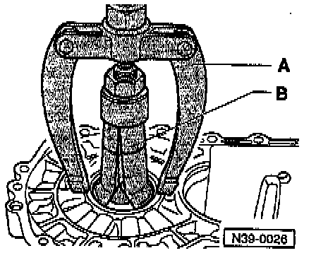
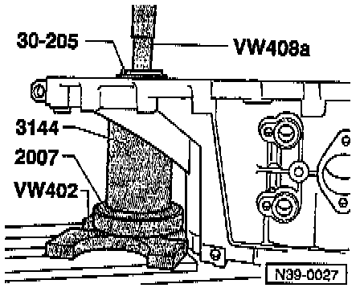
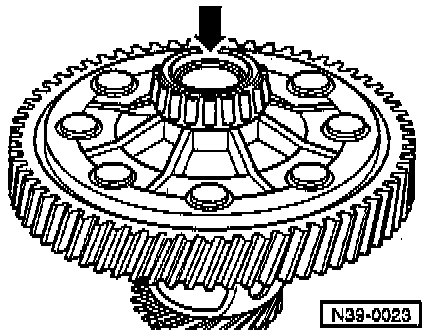
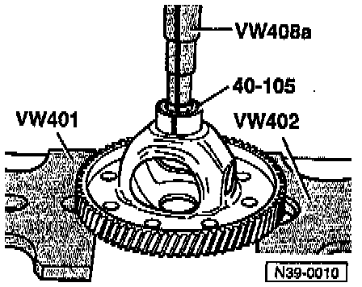
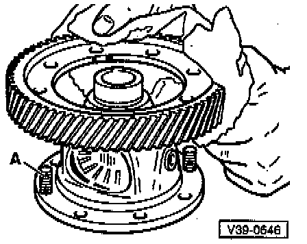
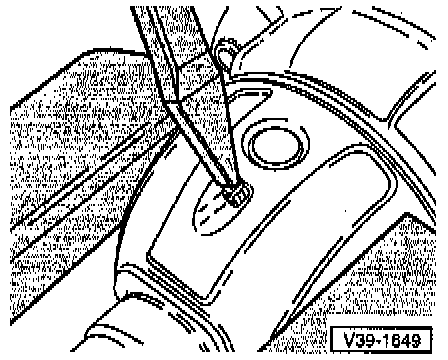
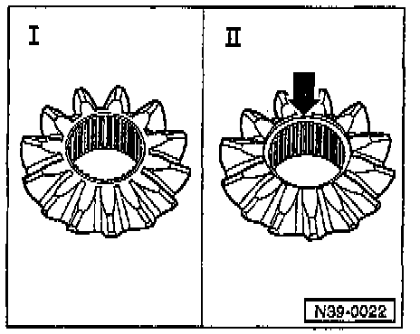

Differential

COMPONENT NOTES AND INFORMATION
NOTE:
^ Heat inner race of tapered roller bearing to 100°C (212°F) before installing.
^ Always replace both tapered roller bearings together, as a set.
^ When replacing the differential housing, transmission housing, or tapered roller bearings, also adjust the differential. Adjustments
1 Flange shaft
- For transmissions without springs behind axle flanges
- Removing/installing. Service and Repair
2 Oil seal
- For transmissions without springs behind axle flanges
- Replacing, refer to Service and Repair
3 Transmission housing
4 Bolt
5 Differential housing
- Bolt to final drive gear
- On transmissions with springs behind axle flanges, both sides are chamfered to accept tapered ring -26-, refer to Fig. 7, below.
6 Final drive gear
- Riveted on in production, replacement bolted on
- Pressing off, refer to Fig. 9, below.
- Heat to 100°C (212°F) for installation on differential housing, refer to Fig. 10, below.
- Bolting on, refer to Fig. 11, below.
- Paired with pinion (output shaft); only replace as set
7 Packing plate
8 Nut
- Tighten to: 70 Nm (52 ft lb)
9 Differential housing
- With final drive gear (riveted on in production)
- Replacing final drive gear: drill out rivet heads, refer to Fig. 8, below.
- Attaching replacement final drive gear with bolts, refer to Fig. 11, below.
10 Speedometer drive gear
- Install in differential housing before pressing in tapered roller bearing inner race
11 Tapered roller bearing inner race
- Pulling off, refer to Fig. 3, below.
- Pressing on, refer to Fig. 4, below.
12 Tapered roller bearing outer race
- Removing, refer to Fig. 1, below.
- Pressing in, refer to Fig. 2, below.
13 Clutch housing
13G Differential pinion gear
- Installing in transmissions without springs behind axle flanges, refer to Fig. 13G, below.
- Installing in transmissions with springs behind axle flanges, refer to Fig. 15, below.
15 One-piece thrust washer
- Lubricate with transmission oil before installing
16 Differential side gear
- Identifying, refer to Fig. 13, below.
- Installing in transmissions without springs behind axle flanges, refer to Fig. 13G, below.
- Installing in transmissions with springs behind axle flanges, refer to Fig. 15, below.
17 Threaded piece
- Installed in conjunction with springs behind axle flanges, refer to Fig. 15, below.
18 Differential pinion shaft
- Drive out using drift
- Installing in transmissions without springs behind axle flanges, refer to Fig. 13G, below.
- Installing in transmissions with springs behind axle flanges, refer to Fig. 15, below.
19 Spring pin
- For securing differential pinion shaft
- Removing/installing, refer to Fig. 12, below.
20 Tapered roller bearing inner race
- Pulling off, refer to Fig. 3, below.
- Pressing on, refer to Fig. 4, below.
21 Tapered roller bearing outer race
- Removing, refer to Fig. 5, below.
- Pressing in, refer to Fig. 6, below.
22 Shim
- For adjusting differential
- Determining thickness. Adjustments
23 Sleeve
- Installed in conjunction with springs behind axle flanges
- To accept oil seal -24-
- Removing and installing, refer to Repair Group 34
24 Oil seal
- Installed in conjunction with springs behind axle flanges
- Replacing, refer to Transmissions With Springs Behind Axle Flanges. Service and Repair
25 Circlip
- Installed in conjunction with springs behind axle flanges
- Ensures that tapered ring, thrust washer and spring are held in position when axle flange is removed
26 Tapered ring
- Installed in conjunction with springs behind axle flanges
- With grooves to secure thrust washer
- Installation position: taper toward differential housing
27 Thrust washer
- Installed in conjunction with springs behind axle flanges
- Installation position: shoulder toward spring, tongue to tapered ring
28 Spring
- Installed behind axle flange
- Applications for transmission with springs behind axle shafts
29 Axle flange
- With drilling for cone-head bolt
- Installed on transmissions with springs behind axle shafts
- Removing and installing, refer to Transmissions With Springs Behind Axle Flanges. Service and Repair
30 Cone-head bolt
- Installed in conjunction with springs behind axle flanges
- Bolt into threaded piece -17-
PROCEDURES

Fig. 1 Driving tapered roller bearing outer race out of clutch housing
- First remove flange shaft seal mounting sleeve on transmissions with springs behind axle flange.

Fig. 2 Pressing tapered roller bearing outer race into clutch housing
- No shim is installed in the clutch housing end.

Fig. 3 Pulling off tapered roller bearing inner race
- Before fitting the extractor, position press tool 40-105 on differential housing.
NOTE: The set-up and procedure for pulling tapered roller bearing inner races off the differential housing is identical for both bearings.

Fig. 4 Pressing on tapered roller bearing inner race
NOTE: The tapered roller bearing inner races for transmission housing and clutch housing are pressed on with the same press tools.

Fig. 5 Pulling tapered roller bearing outer race out of transmission housing
A- Counter support, e.g. Kukko 22/2
B- Internal puller 46-58 mm, e.g. Kukko 21/7

Fig. 6 Pressing tapered roller bearing outer race into transmission housing
- Install shim under outer race.
- Support transmission housing with sleeve 313G4 directly below bearing mounting.

Fig. 7 Both sides of differential housing are chamfered (-arrow-) to accept tapered rings/springs

Fig. 8 Drilling out rivet heads
- Drill out rivet heads from countersunk side with 12 mm drill and knock out with drift.
CAUTION:
^ Clean differential before and after drilling.
^ Cover tapered roller bearings to protect them from metal particles.

Fig. 9 Pressing off final drive gear
- Place thrust piece 40-105 on differential housing.
NOTE: Thrust piece 40-105 can be used with all differential housings.

Fig. 10 Heating final drive gear wheel to approx. 100°C and installing
- Use bolts -A- from repair kit to guide final drive gear into position during installation.

Fig. 11 Bolting together final drive gear and differential housing
- Use special bolts Part No. 02A 498 088A with plates and nuts.

Fig. 12 Removing and installing spring pin for differential pinion shaft
Removing:
- Cover tapered roller bearing inner race and speedometer drive gear to avoid possible damage from metal particles.
- Knock-out spring pin with chisel, inserting chisel into circumferential groove.
Installing:
- Drive fully into the differential housing.

Fig. 13 Identifying differential side gears
- Different versions for transmissions with and without springs behind axle flanges.
With springs: Side gears without recess (illustration I)
Without springs: Side gears with recess (illustration II)

Fig. 14 Installing differential pinion gears and side gears
(transmissions without springs behind axle flanges)
- Lubricate one-piece thrust washer with transmission oil and install.
- Insert pinion gears and drive in pinion gear shaft.
- Drive in new spring pin, refer to Fig. 12, above.
- Insert side gears, turned 180°, and pivot into position (-arrow-).

Fig. 15 Installing differential pinion gears and side gear
(transmissions with springs behind axle flanges)
- Lubricate one-piece thrust washer with transmission oil and install.
- Install both side gears and secure (e.g. with axle flange).
- Install pinion gears, turned 180°, and pivot into position.
- Push in pinion gear shaft (arrow -A-) as far as first pinion gear.
- Position threaded piece (arrow -B-) in side gears.
- Installation position: step toward sun wheel
- Drive pinion gear shaft into final position and secure with spring pin.